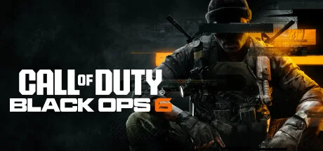

COD 黑色行动系列第 6 作，冷战背景叙事 + 全新多人射击体验。


想象一个1991 年的世界——海湾战争刚结束，柏林墙已经倒了，电视新闻上人人都在说「冷战赢了」。可你站进的不是那个明亮的胜利者世界——你站进的是CIA 内部档案的灰色地带：中东沙漠里没记录在案的秘密行动、东欧地下实验室、美国本土的暗杀名单、加勒比海上既是毒品交易又是情报交易的破码头。每一帧画面都泡在 Treyarch 标志性的暖橙暗调里——昏黄台灯、烟雾密室、桌上摊着的带血指印的牛皮纸文件袋。
你是CIA 一支秘密特工小队的成员，本来在追一个叫 Pantheon 的恐怖网络。你以为这不过是又一次反恐——直到任务进行到一半，你的指挥官给的某个命令不对劲，你的队友里有一个人开始用奇怪的眼神看你，连你自己最近做的几个梦也开始对不上时间线。Treyarch 玩心理操纵这一手玩了十几年，这次他们玩得比以往任何一次都狠。
替你掩护过冲锋的老兄，可能在某个关卡突然举枪对准你；你刚刚干掉的那个「反派」，下一秒被告知其实是个被利用的棋子；你以为你扣下的扳机，是不是从一开始就有人替你扣的？这不是一个关于英雄的故事，是一个关于「我手里这把枪，到底听谁的话」的故事——按下的那一秒，你确定自己是清醒的吗？
Treyarch 冷战谍影，是 Black Ops 系列 15 年沉淀下的独家美学——把90 年代真实军事写实和谍战心理悬疑糅在一起。底色是熟悉的当代军事射击——制式装备、CQB 战术、全球外景；变异在于把整套画面浸在暖橙色调 + 暗室灯光 + 情报机构暗调里，区别于 IW 工作室的冷灰蓝写实路线。色彩锁定情报红 + 暗室黑 + 冷战金三色，是 BO 系列从 2010 年代延续到现在的视觉 DNA。整体调性介于《谍影重重》与《X 档案》之间。
冷战谍影视觉的演化跨越了大半个世纪。1962 年《007 系列》开启了商业谍战电影的视觉传统；1970 年代《三日危机》《总统班底》定型了「暗室、烟雾、文件、电话」的政治惊悚视觉。1990 年代《X 档案》《谍影重重》（2002）把当代谍战美学推到电影级巅峰，并影响了一代游戏设计师。在游戏领域，2010 年《使命召唤：黑色行动 1》第一次把这套视觉系统化用进 FPS——昏暗审讯室、走廊烟雾、闪回剪辑成为 BO 系列招牌。2012 / 2015 / 2020历代 BO 不断迭代这套美学，引入未来科幻 / 越战 / 冷战不同时代切片。BO6 回归 1991 年是这条线的圆环闭合——把系列最初的「冷战暗室」美学重新拉回当代 3A 视觉品质。
基于体验清单 · 审美偏好 · IP故事三维度综合选出